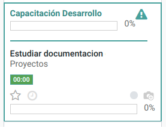

<section class="oe_container">
    <div>
        <h2 class="oe_slogan">Description</h2>
        <h3 class="oe_slogan" style="text-align: justify;">This module allows you to display the main task if it is associated with any task in the project's kanban view.</h3>
    </div>
</section>
<section class="oe_container oe_dark">
    <div class="oe_row">
         <div class="oe_span12">
            <h3 class="oe_slogan text-left"><strong>Parent task on kanban view</strong></h3>
            <h3 class="oe_slogan" style="text-align: justify;">The main task associated with a project task is displayed.</h3>
            
        </div>
    </div>
</section>
